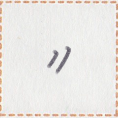
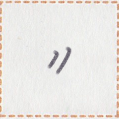

← Previous
Index
Next →
English: "Did you call me yesterday?" "Yes. You did not answer the phone."
Chinese: A你昨天给我打电话了吗? B对啊。你不接电话。
Chinese (pinyin): "nǐ zuótiān gěi wǒ dǎ diànhuàle ma?" "duì a. Nǐ bù jiē diànhuà."
Pekzep (latin transcription): "et2 sau2 kia1 mua2 sui1 zep1 kik1 zep1 sak2 pai2 yn2?" "aim2. mua2 mun1 hop1 sak2."
Pekzep (hanzi transcription): 「一上日汝使言機言来我乎？」「在。汝無手来」
Pekzep (linzklā): 


 



Sound:
Analysis:
| et2 sau2 kia1 | 一上日 | | temporal word | | yesterday |
| mua2 | 汝 | | noun | | you |
| sui1 zep1 kik1 zep1 | 使言機言 | | verb | | to make a phone call to |
| sak2 | 来 | | post-verbial particle | | toward |
| pai2 | 我 | | noun | | I |
| yn2 | 乎 | | sentence-final particle | question marker | ... ? |
| aim2 | 在 | | interjection | | yes |
| mua2 | 汝 | | noun | | you |
| mun1 | 無 | | verb-modifier | negative marker | not |
| hop1 | 手 | | verb | | to hold |
| sak2 | 来 | | post-verbial particle | | toward |